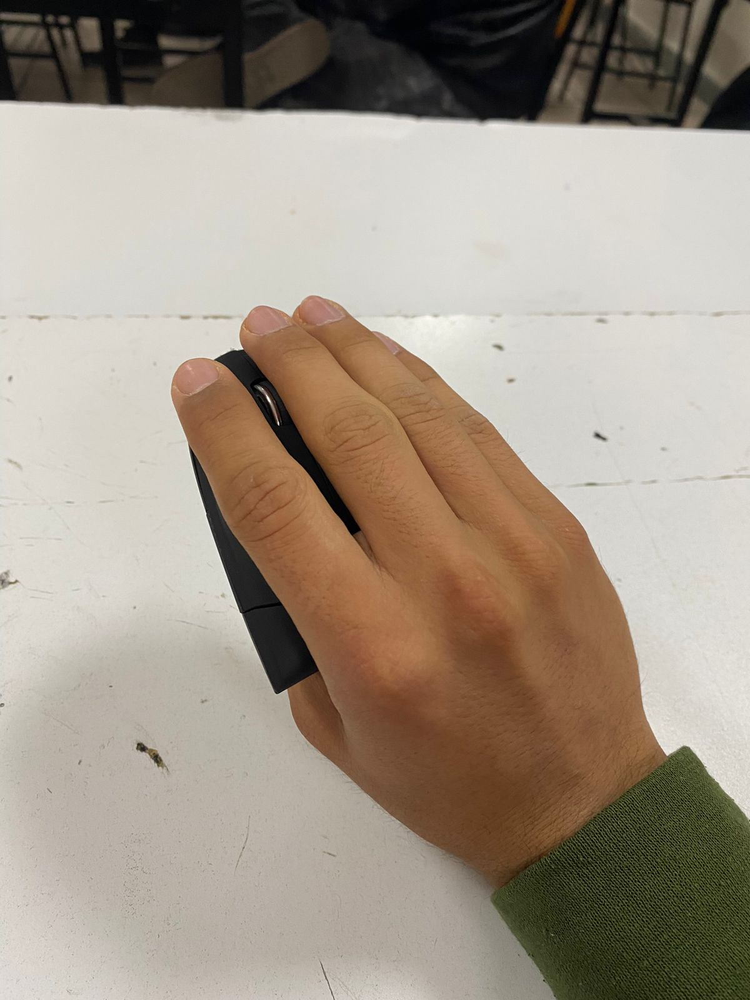

El fútbol es otro de mis pasatiempos favoritos. Me encanta reunirme con mis amigos en el campo y disfrutar de partidos amistosos. Además de ser divertido, el fútbol me ayuda a mantenerme en forma y a liberar el estrés acumulado durante la semana de estudios.
Video Jugando
Videojuegos
Soy un apasionado de los videojuegos. Me encanta sumergirme en diferentes mundos virtuales, explorar historias emocionantes y desafiarme a mí mismo con juegos de estrategia y habilidad. Dedico tiempo a jugar tanto en consolas como en mi computadora, donde puedo conectarme con amigos y disfrutar de emocionantes partidas en línea.
Foto Jugando

Basketball
Además del fútbol, también disfruto jugar baloncesto. Me gusta la emoción y la velocidad de este deporte, así como la competencia sana que surge cuando juego con otros compañeros. El baloncesto es una excelente manera de mantenerme activo y mejorar mi coordinación y habilidades atléticas.
Foto de mi equipo
Cosas que me gustarian hacer como pasatiempo a futuro: